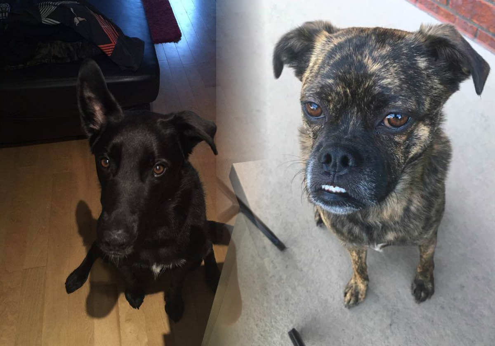
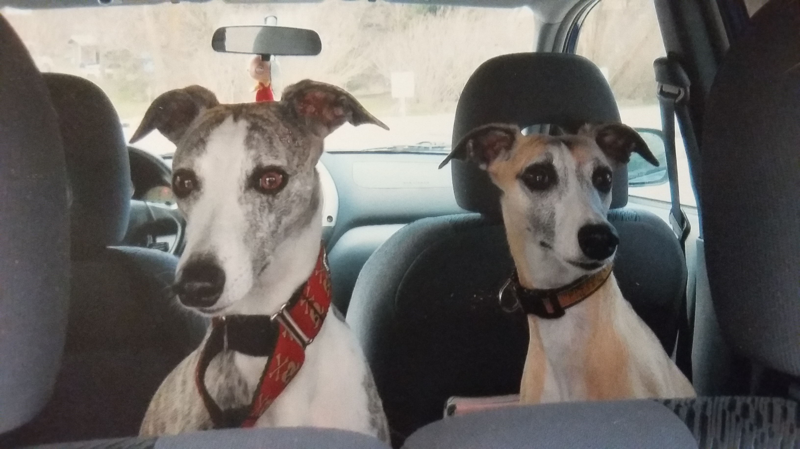
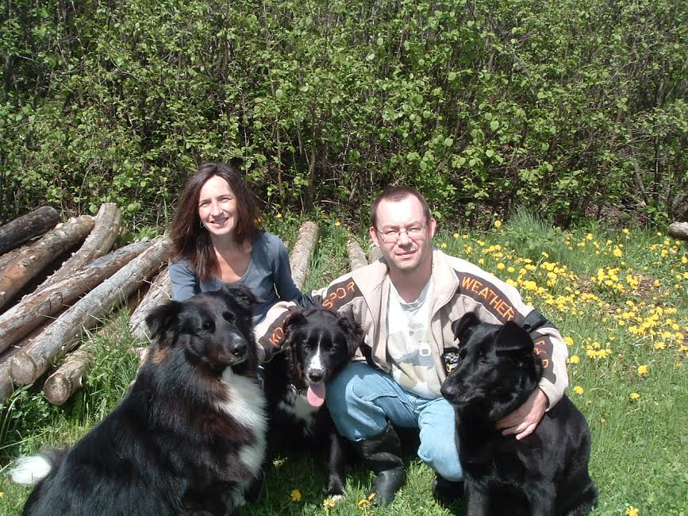

Bienvenue chez Pattitude!
Nous offrons un service personnalisé d'activités canines et de garde animale à domicile dans le Centre de Montréal et les environs (à tarif majoré, détails ici). Nous sommes couverts par une police d'assurance complète (certificat d'assurance sur demande).
Contactez-nous pour arranger une consultation gratuite.
Marche canine
- Marches privées sans frais additionnels - nous travaillons seuls avec votre chien afin de lui dévouer notre entière attention
- Renforcement des bonnes habitudes de marche avec des techniques d'entraînement à jour
- Stimulation garantie pour chiens avec de l'énergie à revendre
- À partir de 20$ (taxes incluses) par marche
- Épargnez 10% sur toute commande de 5 marches ou plus
Garde animale à domicile
- Tarif horaire à partir de 20$/h (taxes incluses), minimum de seulement 30 minutes
- Forfait de 3 marches par jour pour une couverture complète en cas d'absence prolongée
- Aucun frais additionnels peu importe le nombre d'animaux
- Nous nous occupons avec plaisir de chats, oiseaux, reptiles, poissons, plantes et autres
Témoignages
"Pattitude me sauve la vie. Ysaac est digne de confiance, responsable, professionel, gentil et toujours disponible quand j'ai besoin de quelqu'un pour marcher Skye.... même à la dernière minute! Skye adore leurs marches ensemble. Je sais qu'elle a bien été prise en charge car Ysaac m'envoie des photos de leurs aventures au parc à chien. Elle est aussi toujours très fatiguée :) Je recommende Pattitude à tout le monde maintenant. Merci Ysaac, continue ton bon travail!" -Leah (Citation originale)

"Je fais 100% confiance à Ysaac, il est toujours disponible et prend grand soin de mes 2 chiens. Il est professionnel et ça prend quelqu’un de patient et de calme avec un chien comme Thor qui n’est pas toujours facile à promener et peut démontrer une attitude agressive envers les autres chiens. Heureusement qu’il sait comment le gérer en situation de crise. Je n’ai que de bons mots pour Ysaac et je le recommande fortement à tout le monde qui se cherche un promeneur professionnel." -Celica
"Pattitude est tout ce qu'on pourrait demander d'un service de marche canine et de garde à domicile, et même plus encore! Ysaac est plaisant, professionel, fiable et juste, mais surtout Sailor et Olive l'adore. Il travaille à merveille avec mon précieux duo. Comme on dit, la preuve est dans le pudding! Depuis qu'il les marche, j'ai remarqué qu'ils sont moins réactifs aux distractions telles que les autres chiens et les écureuils, et Sailor particulièrement a perdu du poids. Ysaac a une méthode attentive avec les chiens, et j'ai l'esprit en paix lorsqu'ils sont avec lui." (Citation originale)
"Nous ne laissons pas souvent nos chiens, mais si nous devons partir quelques jours, nous demandons toujours l'aide d'Ysaac. Il est la seule personne de confiance que nous connaissons pour nos chiens. Il est patient, il prend le temps avec chacun, et les chiens l'adorent! Nos chiens sont toujours allés vers lui naturellement et il a un réel talent avec eux. De les savoir à la maison, dans leur environnement, en bonne compagnie et en sécurité, nous enlève les soucis de devoir les laisser. Merci Ysaac!" -Isabel
"Mon chien Maxi était entre bonnes mains avec pattitude! Je leur ai fait confiance avec la clé de mon domicile et mon amour à 4 pattes et le referai dès que j'en aurai besoin." -Julie (Citation originale)